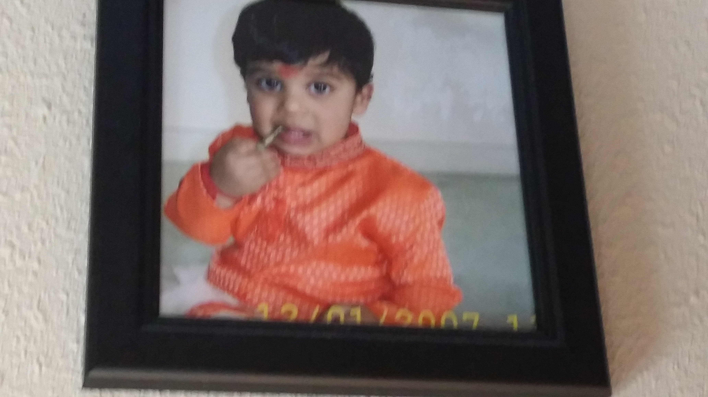

I am Shubhan Chari. I am 11 years old and I live in Santa Clara with my mom, dad, and brother. I will be a sixth grader at Hyde Middle School. People call me a very helpful and nice kid. Not to brag, people give compliments and motivation to me, which is cool and motivating.
When I was a little baby, I don't remember too much of back then. However, from pictures, videos, and stories, I know that I was a cute boy back then.The picture on the right shows 1-year old me sucking on a bell during a religious event. That is one of the cutest pictures I, and probably you, have ever seen. I have also been to India when I was two and Hawaii when I was 1 and a half. My mom says I learned to read when I was around 3, which is earlier than most kids. Also, when I was 3, I went to a preschool. These memories have a few flashes, but I think these events have shaped my life today in a way.
This is me now. The interests have built through the years. One of those interest is basketball EVERYTHING. I play the game of basketball, follow basketball on the news, and try to find new players, and stats. There is something like this for football as well, except I don't follow every single player, and I don't follow the stats. I do play football as well, except it is more of a hobby. I am also a HUGE gamer. When I mean huge, I mean HUGE. My favorite game is NBA2K17, but I have developed a big liking for Nintendo's Super Mario and Pokemon franchises, as well as Super Smash Bros and Splatoon. I have also developed a liking for Supercell games Clash of Clans, Boom Beach, and especially Clash Royale. I also have a great liking for math. My most favorite is algebra. I also play the flute and do TaeKwonDo. And Last, but not least, I am a huge programmer. I am learning Python and this website uses HTML and CSS, showing what I have learned from the two languages. There are also a lot more things I do, like, for example, I like to go to Great America, or biking. When the family travels, we would always have fun. For another thing, for some reason, I have developed a liking for the font called Cherry Cream Soda.